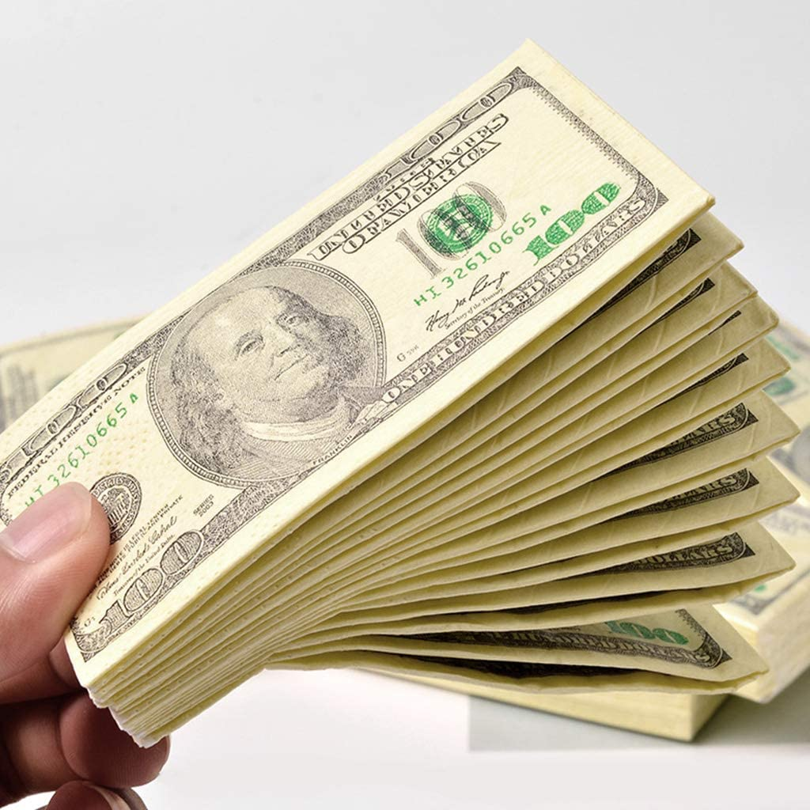

Patrimonio e investimenti
Dal 2010, la rivista Time inserisce Zuckerberg tra le 100 persone più ricche e influenti del mondo nell'annuale classifica di persona dell'anno...

I suoi acquisti...
- Acquista un jet privato per 700 000 dollari nel 2012.
- Il 19 febbraio 2014, Mark Zuckerberg compra per 19 miliardi di dollari il famoso servizio di messaggistica WhatsApp.
- Ha acquistato la Oculus VR, società produttrice di Oculus Rift, un visore per la realtà virtuale indossabile sul viso, per 2 miliardi di dollari nel 2014.
- A ottobre 2014 ha acquistato 283 ettari dell'isola di Kauai, nelle Hawaii, per 100 milioni di dollari.
- Nel 2014 il suo parco auto comprende un'Acura TSX, una Golf GTI, una Honda Fit e una Pagani Huayra acquistata per 1,3 milioni di dollari nel 2014
- A settembre 2015 ha acquistato una casa per la cifra di 22,3 milioni di dollari al centro di Manhattan.

Beneficenza...
- Zuckerberg nel 2013 ha donato 1 miliardo di dollari in beneficenza, dando anche un contributo alla Silicon Valley, che era entrata in crisi finanziaria nel 2008.
- Nel 2014 l'imprenditore ha donato 120 milioni di dollari per l'ammodernamento delle scuole pubbliche di San Francisco e della zona limitrofa, sostenendo l'importanza della formazione di ogni singolo cittadino.
- Nell'ottobre 2014, Zuckerberg e sua moglie Priscilla Chan hanno donato 25 milioni di dollari per combattere la malattia da virus Ebola, in particolare l'epidemia che ha colpito l'Africa occidentale.
- In occasione della nascita della primogenita, il 1º dicembre 2015, Zuckerberg e la moglie Chan si impegnano a trasferire il 99% delle loro azioni Facebook, del valore di 45 miliardi di dollari, alla Chan Zuckerberg Initiative, la loro nuova organizzazione che farà beneficenza e che si concentrerà su salute e istruzione. I fondi non saranno trasferiti immediatamente, ma nel corso della loro vita.
- Poco dopo l'inizio della pandemia di COVID-19, Mark Zuckerberg ha disposto una donazione di 20 milioni di dollari per garantire il sostegno al sistema sanitario americano nell'acquisto di macchinari e presidi medici necessari alla lotta al virus.
Al 28 ottobre 2022, secondo Forbes, con un patrimonio stimato di 36 miliardi di dollari, è uno degli uomini più ricchi al mondo...
Ritorna alla home